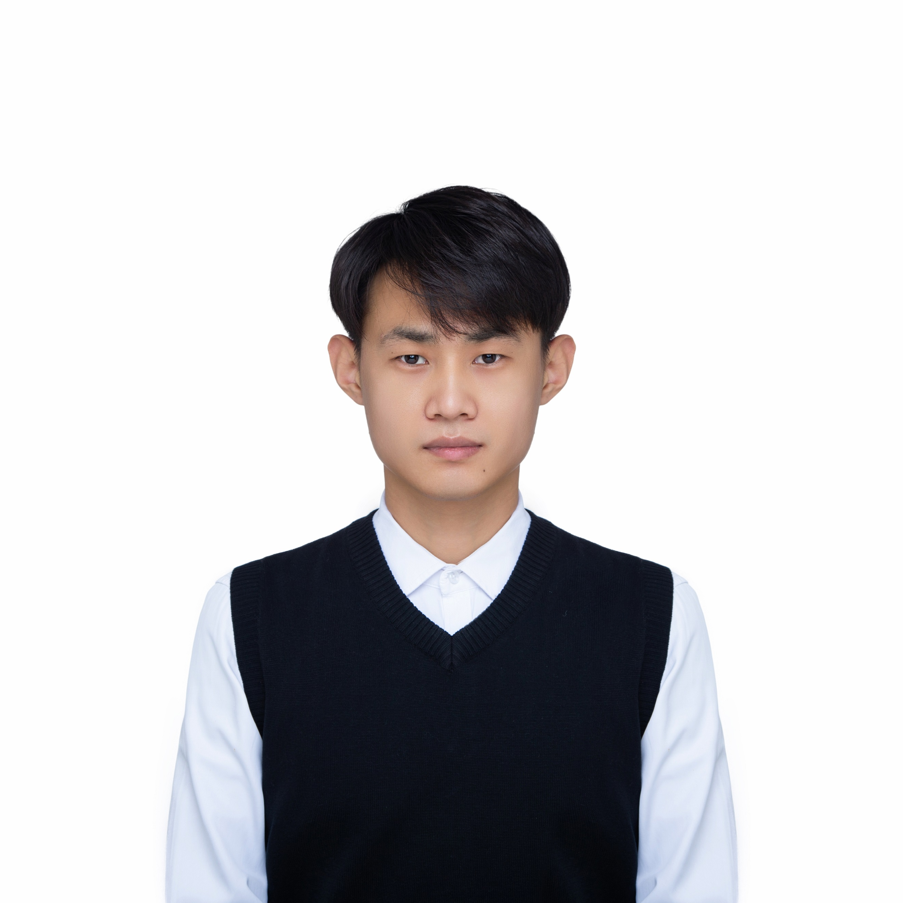
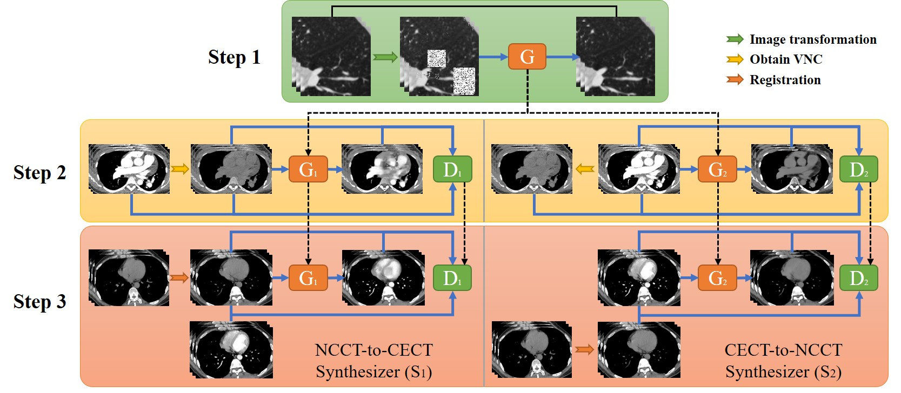

Haowen Pang
College of Medicine and Biological Information Engineering |
 |


Short-Bio
I am a Master candidate at the College of Medicine and Biological Information Engineering, Northeastern University, under the supervision of Dr. Qi Shouliang. I received my bachelor degree from College of Mathematics and Information Science, Hebei University. My research interests lie predominately in the area of medical image analysis and deep learning.
News
- [04/2023] A paper on NCCT-CECT image synthesizers and their application to pulmonary vessel segmentation is accepted in Computer Methods and Programs in Biomedicine.
- [04/2023] A paper on segmentation of pulmonary vessels from non-contrast CT Supervised by contrast-enhanced CT images is accepted in Biomedical Signal Processing and Control.
- [01/2023] A paper on Deep CNN for COPD identification by Multi-View snapshot integration of 3D airway tree and lung field is accepted in Biomedical Signal Processing and Control.
- [08/2022] A paper on segmentation of pulmonary lobes before and after lobectomy is accepted in Computers in Biology and Medicine.
Selected Publications [Google Scholar]
(* Co-first auhtor; † indicates corresponding authorship)|
 |
NCCT-CECT image synthesizers and their application to pulmonary vessel segmentation. Haowen Pang, Shouliang Qi†, Yanan Wu, Meihuan Wang, Chen Li, Yu Sun, Wei Qian, Guoyan Tang, Jiaxuan Xu, Zhenyu Liang, Rongchang Chen†. Computer Methods and Programs in Biomedicine, 2023. [paper] |

|
A fully automatic segmentation pipeline of pulmonary lobes before and after lobectomy from computed
tomography images.
Haowen Pang, Yanan Wu, Shouliang Qi†, Chen Li, Jing Shen, Yong Yue, Wei Qian, Jianlin Wu. Computers in Biology and Medicine, 2022. [paper] |
Academic Services
© Haowen Pang | Last updated: May 2023